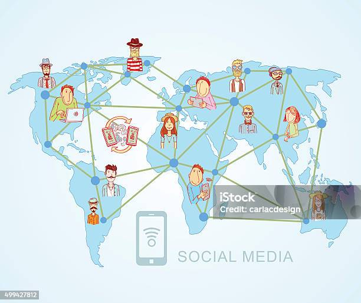

Bem-vindo!
As redes de computadores evoluíram rapidamente desde seus primeiros experimentos nos anos 1960 até as tecnologias modernas de alta velocidade e conectividade global.
“A Internet não é apenas uma tecnologia, é uma revolução na forma como o mundo se comunica.” — Autor Desconhecido
Nas páginas seguintes, você conhecerá um pouco sobre:
- Como surgiram as primeiras redes;
- As principais tecnologias que moldaram a Internet;
- O que esperar para o futuro das comunicações digitais.